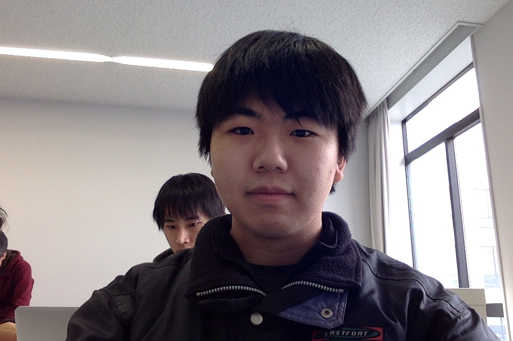
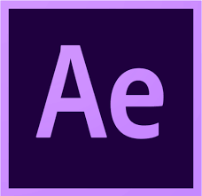
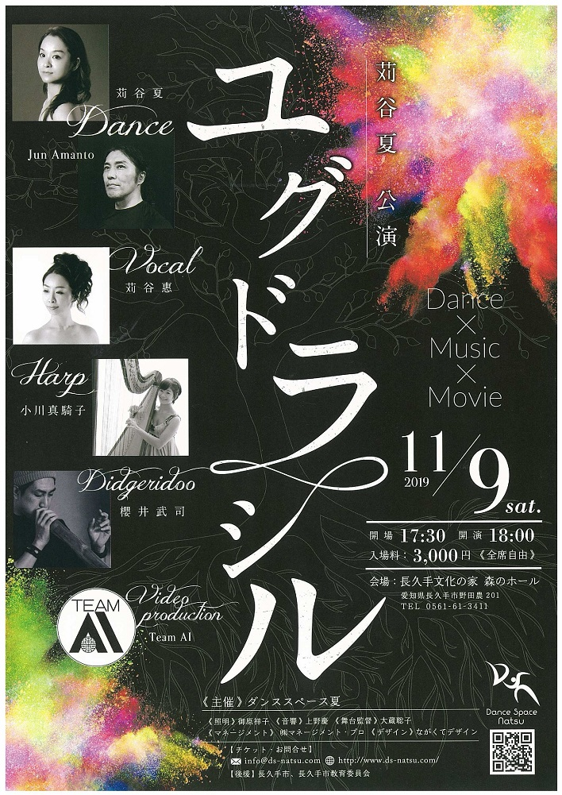

<!DOCTYPE html>
<html lang="ja"></html>
<head>
    <meta charset="UTF-8">
    <meta name="viewport" content="width=device-width, initial-scale=1.0">
    <title>portfilio</title>
    <link rel="stylesheet" href="style.css">
    <link rel="stylesheet" href="https://use.fontawesome.com/releases/v5.8.1/css/all.css" integrity="sha384-50oBUHEmvpQ+1lW4y57PTFmhCaXp0ML5d60M1M7uH2+nqUivzIebhndOJK28anvf" crossorigin="anonymous">
</head>
<body>
    <header class="global-nav">
        <h1> </h1>
        <nav class="menu">
            <ul>
                <li><a href="#profile">Profile</a></li>
                <li><a href="#skill">Skill</a></li>
                <li><a href="#project">Project</a></li>
                <li><a href="#contact">Contact</a></li>
            </ul>
        </nav>
    </header>
  </header>
  <section class="title">
  </section>
  <main>
     <section id="profile">
         <h2>profile</h2>
         <div class="profile2">
           
           <ul>
               <li>名前: Rikuhiro Ito</li>
               <li>所属: 愛知工業大学情報科学部メディア情報専攻２年　TeamAI所属</li>
               <li>経歴: 愛知工業大学名電高等学校出身。<br>　　　入学してからは主にPhoto shopとMAYAを学んだ。</li>
           </ul>
         </div>
     </section>
     <section id="skill">
        <h2>skill</h2>
        <div class="skill-item">
            
          <ul>
              <li></li>
              <li></li>
              <li></li>
              <li></li>
              <li></li>
              <li></li>
          </ul>
        </div>
    </section>
     <section id="project">
         <h2>project</h2>
         <div class="project-item-contener">
           <figure>
               <a><iframe width="640" height="360" src="https://www.youtube.com/embed/n2ZSvTykWdA" frameborder="0" allow="accelerometer; autoplay; encrypted-media; gyroscope; picture-in-picture" allowfullscreen></iframe></a>
               <figcaption id="cmoji">義肢装具士になろう</figcaption>
           </figure>
           <figure>
               <a href="https://www.ait.ac.jp/news/detail/0004457.html"></a>
               <figcaption id="cmoji2">ユグドラシル</figcaption>
           </figure>
         </div>
         <div class="project-item-contener2">
            <figure>
                
               <figcaption id="cmoji3">photo shopを使用した作品</figcaption>

            </figure>
         </div>
     </section>
     <section id="contact">
         <h2>contact</h2>
          <a href="mailto:x19010@aitech.ac.jp"><i class="fas fa-envelope"></i></a>
     </section>
  </main>
</body>
</html>